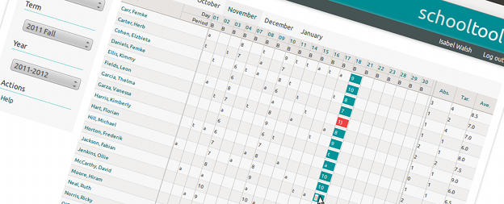
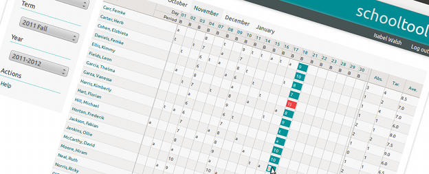

Title
SchoolTool is particularly well suited for
deployment in the developing world, with strong support for translation, localization
and automated deployment and updates
via the Ubuntu Linux installer and package management system.
SchoolTool is based on a completely free
software stack, from the operating system, to the development tools, to the application itself.